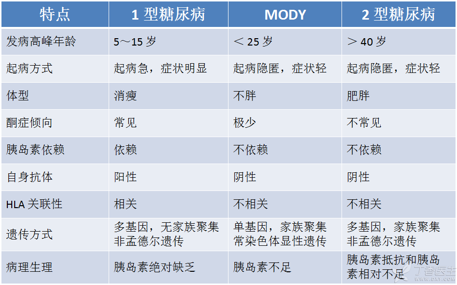

年轻的成年发病型糖尿病（maturity-onset diabetes of the young，MODY）也叫「青少年的成人型糖尿病」「青年人中的成年发病型糖尿病」「青年起病成年型糖尿病」等等，因为是直接从英文翻译而来，所以各种叫法都有，不过简称是一样的——MODY。
MODY 是一种家族遗传的糖尿病，主要特点是：① 一般都在 25 岁前发病，② 直系家族成员中起码有三代人都有糖尿病（如患者本人、患者父亲、患者爷爷都有糖尿病），③ 症状、表现类似于 2 型糖尿病，一般不会发生酮症酸中毒，至少在发病 2 年内不需要使用胰岛素治疗。
虽然糖尿病很常见，但 MODY 比较罕见，在我国很少有相关的报道，可能是由于 MODY 病情较轻容易漏诊，或容易被误诊为 1 型、2 型糖尿病。
MODY 的病因是家族基因的异常。这些异常的家族基因可以导致胰岛素分泌减少，从而造成血糖升高。
会遗传，MODY 是常染色体显性遗传病。理论上，只要父母中有一方有 MODY 的异常基因，他们的孩子就会患上 MODY，并且还会继续遗传给孙辈。
内分泌科。
MODY 的典型表现是：
25 岁前就会出现血糖升高，不过一般只是轻度的血糖升高；
发病时体型不胖；
无明显口干、多饮、多尿、多食、体重减轻等症状；由于没什么不适症状，年轻人又很少测血糖，所以很多 MODY 是在中年以后才被发现的；
一般不会出现糖尿病急性并发症——酮症酸中毒；
至少在发病 2 年以内不需要依靠胰岛素治疗；
家族亲属中有很多糖尿病患者，且他们在发病时通常也很年轻。
根据突变基因不同，MODY 可以分成很多亚型，分别为 MODY1、MODY2、MODY3……MODY6。不同的亚型，病情轻重不同，表现也有所不同。
MODY 的并发症和普通糖尿病的并发症相同，如糖尿病视网膜病变、糖尿病肾病、糖尿病外周血管病变等等。
MODY2 患者的病情一般都比较轻，也很少合并高血压、肥胖、高血脂等情况，所以 MODY2 的并发症比较少见，即使出现了并发症，程度也比较轻。
MODY1 和 MODY3 患者的病情一般都比较重，随着病情进展容易并发糖尿病视网膜病变和糖尿病肾病，最终有一半的患者需要用胰岛素控制血糖。
MODY5 患者常伴有多囊肾、肾性糖尿、非糖尿病性肾病和肾功能减退，女性患者还可伴有性器官发育异常。
检查同一般的糖尿病，包括血糖、糖化血红蛋白、肝肾功能、眼底、尿蛋白、糖尿病自身抗体、胰岛素、C 肽等等。
此外，对怀疑是 MODY 的糖尿病患者进行基因检测，可以确诊 MODY。
详见下表，参考自陈家伦主编的《临床内分泌学》。

MODY 的治疗和普通糖尿病相同，即控制血糖、防止或延缓并发症。通常要治疗终身。
不同的 MODY 亚型，控制血糖的方案不同。比如：
(1)MODY2 一般病情较轻，2/3 的患者只要通过饮食控制、适当运动即可控制血糖，不需要服药；另外 1/3 的患者口服降糖药也可以很好的控制血糖，如果要生育，怀孕期间可能会短期使用胰岛素控制血糖。
(2)MODY1 和 MODY3 一般病情较重，发病早期需要口服降糖药控制血糖，随着病情进展，最终有一半的患者需要用胰岛素控制血糖。
常用的口服降糖药为磺脲类（如，格列 XX）和 α 糖苷酶抑制剂（如，XX 波糖）。
需要复查。如果血糖控制不佳，需要按照医嘱频繁复查；如果血糖控制稳定，可以每 1～3 个月复查一次。糖尿病患者要学会在家中自己监测指尖血糖。
（1）控制饮食，按时吃饭，不暴饮暴食。
（2）适当运动，保持体型。
（3）谨防低血糖，随身携带饼干、糖块，出现饥饿感、心慌、出汗、头晕、手抖等低血糖症状时，及时测血糖并进食。
（4）学会自测血糖，规律监测血糖，去医院复诊时可以把血糖情况告知医生。
MODY 患者在打算生育前先进行遗传咨询，和专业医生讨论后代患病的可能性，决定是否要生育。
家族中有 MODY 患者，其他健康的家族成员可进行基因检测，如携带有 MODY 的致病基因，可以进行早期生活方式干预以及血糖监测追踪，有可能可以避免 MODY 的发生。
MODY 本身不影响生育，即使是比较重的 MODY1 和 MODY3 也可以生育，在怀孕过程中可能需要使用胰岛素控制血糖。
但患者极有可能把 MODY 遗传给下一代，所以建议 MODY 患者在打算生育前先进行遗传咨询，和专业医生讨论下一代患病的可能性，决定是否要生育。
只要血糖控制平稳，没有出现糖尿病的并发症，一般不影响运动、高原旅行和坐飞机，但要注意可能会发生低血糖，建议随身携带糖块和饼干。